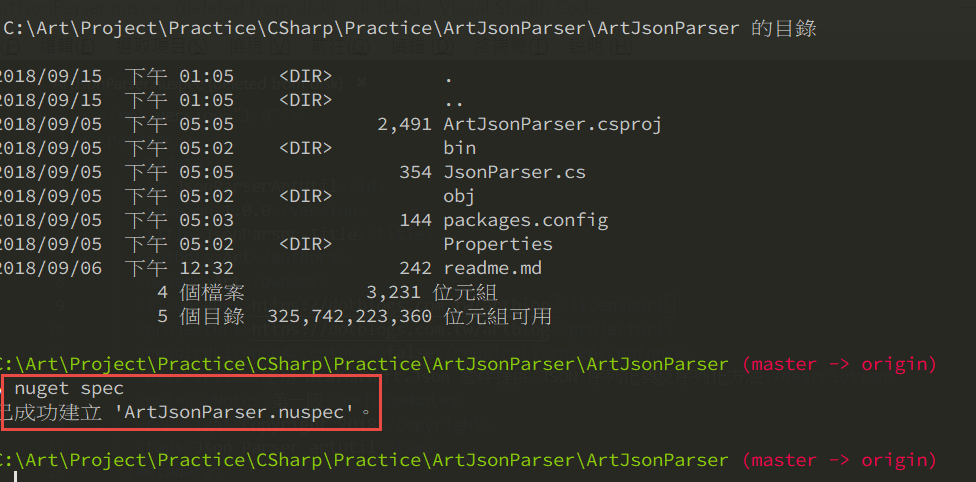
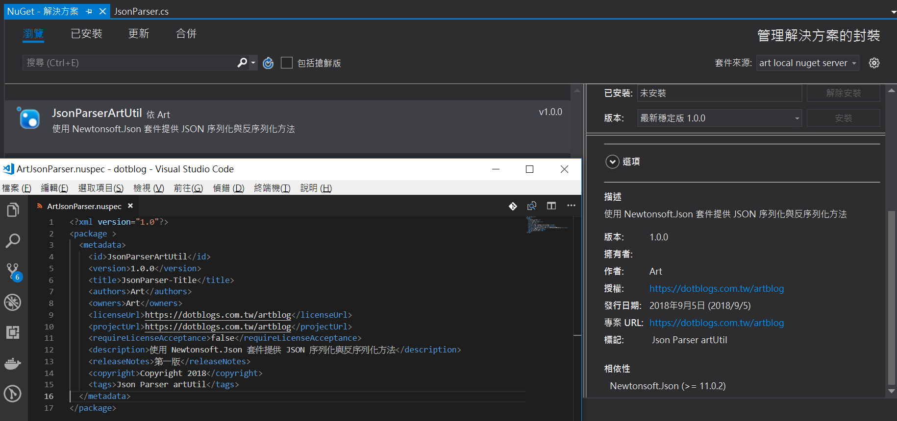
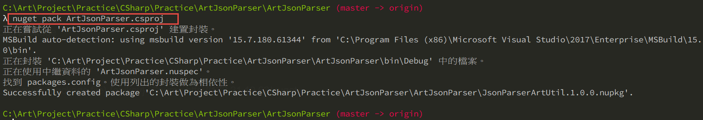
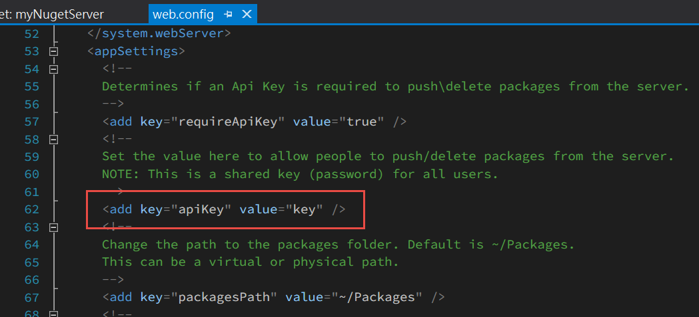
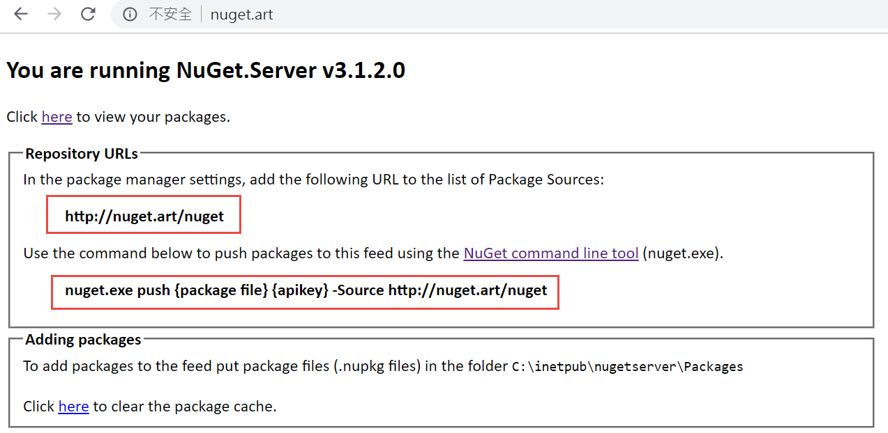
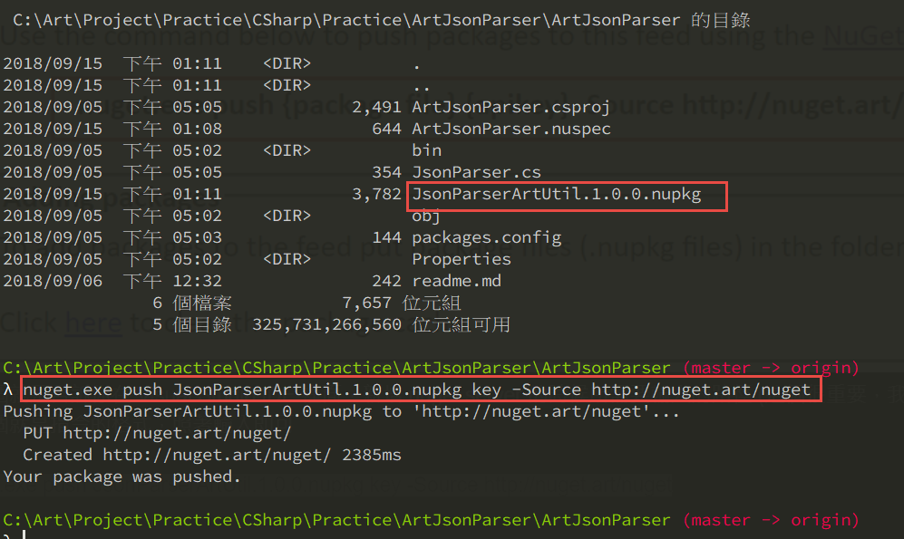

前陣子同事詢問怎麼樣製作自己的 nuget 套件，剛好有時間的情況下就搜尋了一下，沒想到出乎意料的簡單
秉持著好記性不如爛筆頭的原則，將實作過程紀錄一下，順便紀錄一下心得
首先需要將專案建立 spec file
1 | nuget spec |

指令產生的檔案是為了記錄專案的資訊，程式會建立範本，再依據自己需求進行調整，最後搜尋套件的時候可以看到這些資訊

接下來就是將專案打包起來上傳到 nuget server，所以需要先將專案建置一下再下指令打包
1 | nuget pack ArtJsonParser.csproj |

架設自己的 nuget server
首先開啟一個新的 .net 專案，並安裝 nuget.server 套件，安裝完成之後直接修改 web.config 裡面的上傳 api 金鑰

另外一個路徑的設定是上傳之後套件存放的地方，視情況修改，到這邊就完成了
直接將專案發行到硬碟，並且至 IIS 中將網站掛起來即可
也可以修改 windows hosts 檔案讓 local nuget server 吃自己喜歡的域名
掛載完成之後，就可以透過指令上傳套件了
如果忘記上傳指令格式的話，直接開 nuget server 網站也可以看到

第一個就是告訴你在 Visual Studio IDE 裡面，新增 nuget server 的時候所需要輸入的路徑
第二個就是指令的格式，照著輸入即可
1 | nuget.exe push JsonParserArtUtil.1.0.0.nupkg key -Source http://nuget.art/nuget |

到這邊為止，就已經完成了自己的套件建立及 nuget server
過程很簡單，只有幾行指令而已，因為所有事情 MS 都做掉了。
我覺得架設 nuget server 對我最大的好處，就是會讓我開始用團隊的角度思考程式碼 Re-Use 這件事
以往開發程式跟專案，若是碰到有需要共用的部分，通常都是將專案的產出 dll 檔案複製到另外一個專案去做引用參考，這樣有很多的缺點，最大的缺點就是一切都是要人工介入，而人工又是最難以保證的事情。
未來要做持續佈署，直接下一個 nuget restore 就可以做掉這件事情了。人工介入的環節越少越好，這樣才不容易出錯，如果知道這個技巧，就可以逐漸將公司內的共用工具有系統的整合起來，在這些工具專案的說明，也有提供超連結的部分，這時候只需要在另外建立一個簡單的說明網站或是直接超連結到公司內部的某一份文件，就可以避免掉很多不必要的重工。
這些事情在以前是沒有機會接觸到的，自然也就沒有想過，沒有那個環境，是不會有體悟的，只有當你身處在那個環境之內，才會思考到這些事情，雖然很微小，但是卻是一點一滴的在改變自己的視野。
本來是不打算寫這一篇的，因為沒甚麼料，參考資料寫得比我更清楚詳細，而且微軟的文件關於這部分寫的超級詳細的，不過轉念一想，部落格本來就是寫給自己看的，這一件事情對我有啟發，我想記錄下來，於是我就這麼幹了，若是剛好能幫助到恰巧也不懂的人，那就更好了